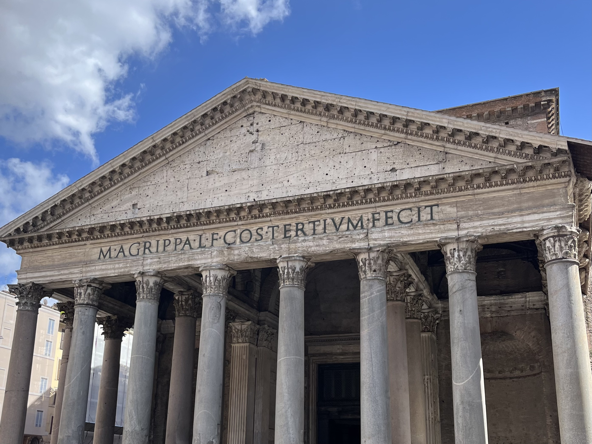

City Guide of Rome
Rome, the city of Antiquity, the Eternal City. Rome is known for its ancient history, the site of many pinnacles of artistic and intellectual achievement, mythological and religious significance, and as a place of global trade and business. Centuries ago, the city stood as the capital of one of the most dominate empirical forces the world has seen. Today, Rome stands today as a political capital, religious center, and memorial to creative imagination. With all these well-preserved pieces of history, visiting Rome is like stepping through a portal to the ancient world.
Location
Rome is in the central western portion of the Italian Peninsula within Lazio. The Tiber River flows through the city and serves as a connection to major water ways. Its proximity to the Mediterranean allows for a favorable climate of comfortably cool winters and warm humid summers.
Tourism
Rome is home to numerous famous architectural and artistic feats that are responsible for bringing millions of tourists to the city every year. The city is most famous for its attractions from the ancient world and renaissance period. These works of architecture, technology, and art often revolve around the religion or political state at the time of their creation. Earlier pieces typically revolve around mythology, the growing roman empire, and the empirical family while later pieces focus on the Roman Catholic empire, Rome as a Papal state, and the artistic competition of the renaissance. Regardless of who you are, Rome has attractions for people of all ages and backgrounds
Staying in Rome
Rome offers numerous hotels and Airbnbs to accommodate all needs. It is best to stay as close to the ancient capital of Rome which houses most Rome’s main attractions. Once within the ancient capital, transportation is very easy due to the walkability of the city. There are countless restaurants and cafes scattered about the streets of Rome that serve authentic Italian cuisine at reasonable prices. When dinning in Rome, you can find some of the best pasta in wines in Italy. I highly recommend trying black truffle if you visit during its season.